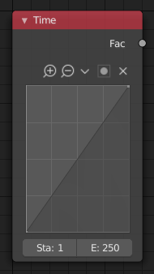

时间节点¶

时间节点。¶
时间节点 生成一个随 时间线 变化，同时受曲线影响的因数(从0.0到1.00)。
输入¶
此节点没有输入端口。
属性¶
- 曲线
Y向值定义了曲线的输出值情况。曲线控制参看：曲线部件 。
Tip
翻转曲线会反转时间输入，但在节点设置中很容易忽略这一点。
- 开始，结束
时间范围的开始帧和结束帧指定输出的持续时间。由表格中的X轴表示。定义一个高于结束帧的起始帧可以反转时间输入。
输出¶
- 因数
A speed of time factor (from 0.0 to 1.0) relative to the frame rate defined in the Render Dimensions Panel. The factor changes according to the defined curve.